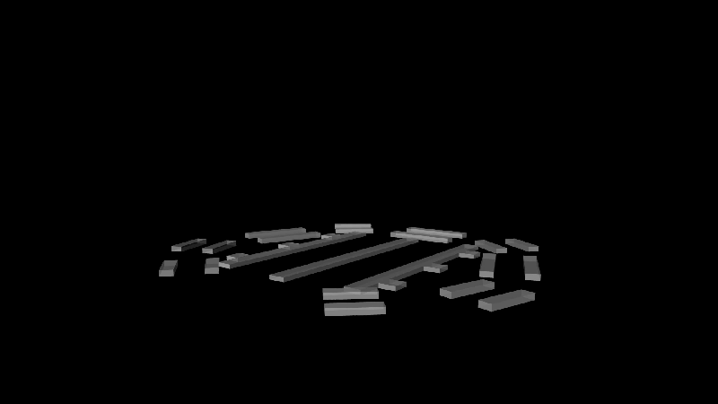
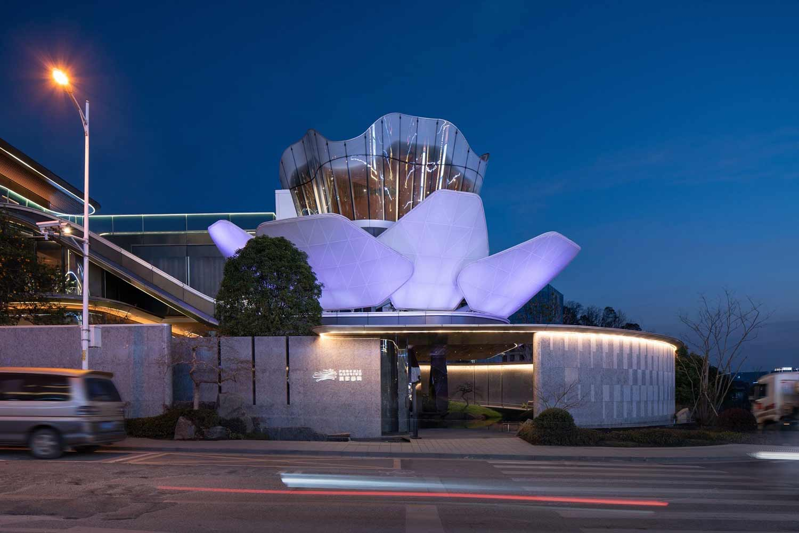
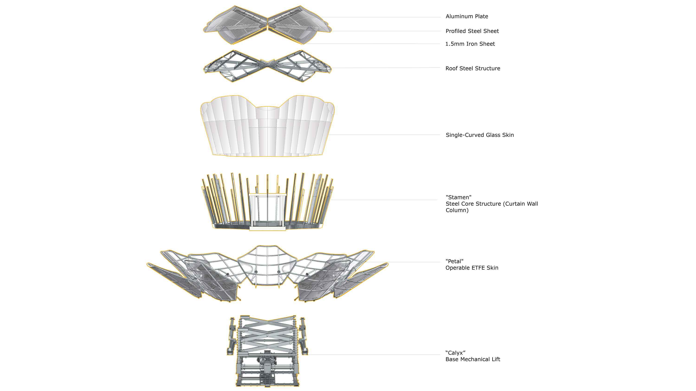

Overview
At RoboticPlus.Tech (大界智造), a Shanghai-based intelligent construction consultancy, the internship centered on one of China's most technically complex kinetic facades — the "Lotus," a large-scale moving structure by the Xiang River in Changsha. The work directly contributed to the project's core engineering challenges: optimizing the structural node geometry to reduce GRC mold waste by 85% (from 2,000㎡ to 300㎡), analyzing kinetic panel mechanisms, and fabricating precision 3D-printed models for client presentation.
A second major contribution was the design and build of the company website roboticplus.tech — a full editorial showcase of the firm's portfolio across five flagship projects. The site reflects 90% original work: information architecture, visual design, content, and front-end implementation.
Kinetic Facade — Motion Study

Full kinetic motion simulation — Lotus facade panel deployment sequence

Kinetic mechanism study — parametric panel articulation analysis
Node Optimization & Physical Model

Precision 3D-printed model for client presentation — GRC node geometry after computational optimization
Exploded Assembly Diagram

湘江之花 — exploded diagram showing structural hierarchy, kinetic layers, and GRC panel assembly logic